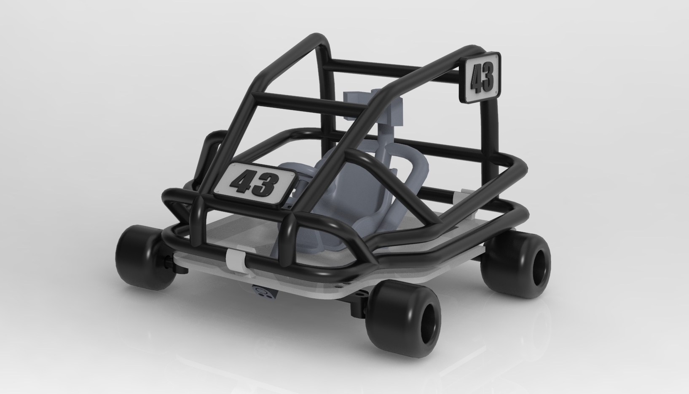
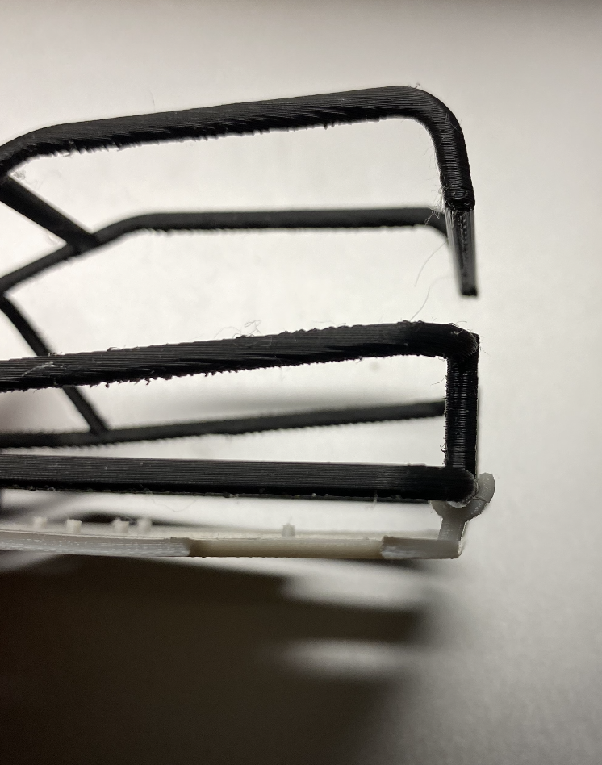
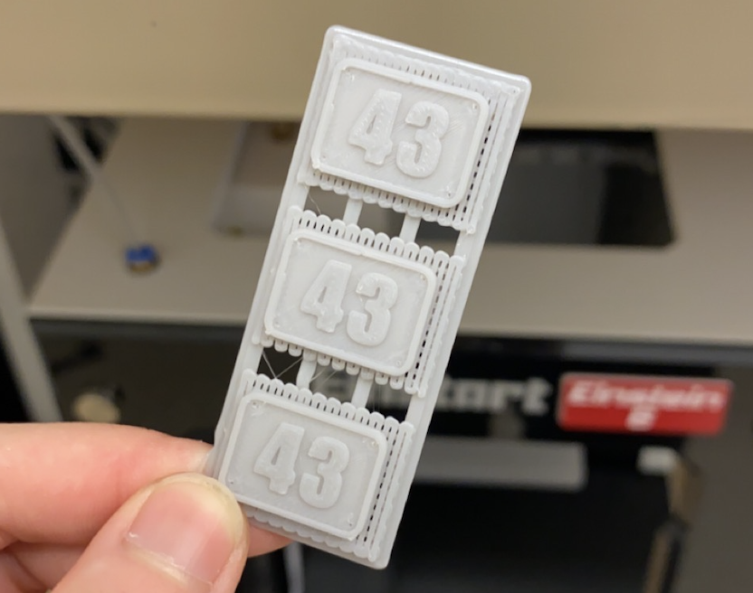
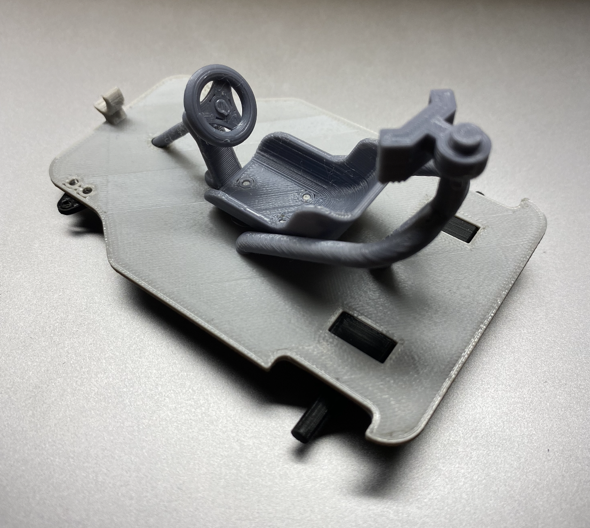

Replica of PSWE Grand Prix's Kart 43
WINTER 2021 (ONGOING) - As a winter break project, I'm working on making a small model of my Grand Prix team's kart. Between printing for my EPICS and Toy Design projects, I'm always in the ME 3D printing lab, but I still haven't printed anything fun for myself. This started as a project to print something fun for my desk, but it's quickly turning into a huge learning experience.
CAD Design
The idea had been rolling around in my head for a while, so after my last exam for the year I headed for the computer labs to get started on CAD design.
I'm just coming off a semester of using PTC Creo Parametric in ME 444, Toy Design, so it's what I choose for this project.
I started with the roll cage because it's what makes up the kart's iconic outer shape. The pipe diameters are 3 mm, the smallest diameter I'm comfortable with them being.
Iteration 1
I got too excited to put everything together, so I don't have any pictures of the prints as they came off the printer.
Taking off the supports on the roll cage took me nearly an hour, and despite being quite cautious I still accidentally snapped some parts off. 3 mm might be too thin.
I'm realizing that the Einstart printers create very brittle prints - the Lulzbot Taz 6 printers result in strong prints that don't snap as easily, and I suspect it might be because of the temperatures that the printers run at. The LEGO man hands structure snapped, and I'm thinking there are a couple of possible reasons why. One is print orientation, but because I want the base to print horizontally on the plate there's not much I can do to change that. Another possibility is the grips come too close at the top, and their sides can't deflect enough. I will try to increase the thickness of these grips and open it up futher at the top, and see how that turns out.
The number plates came off pretty well, though! The holes are too small to run wire or thread through, so I'll probably heat a needle with a soldering iron and increase the hole diameter that way. I won't have access to a soldering iron until the semester starts, so this will have to wait until then.
Iteration 2
Some changes are:
- Increasing roll cage pipe diameter from 3 mm to 4 mm
- Clearances on all interfacing rigid parts adjusted to 0.5 mm
- Clearances on freely rotating parts increased to at least 1 mm
The thicker roll cage pipe diameter definitely doesn't look as sleek as the 3 mm diameter did, but it did the trick: the printed part is stronger than before, and I was able to get all the supports off without snapping anything off. Support removal did take me nearly an hour and a half of switching between needle-nose pliers, flush cutters, and my exacto knife, but I'm just glad I didn't break it this time.
0.5 mm clearances on rigid interfacing parts seems like the sweet spot. The seat and headrest parts fit perfectly into the pins in the base, and the steering wheel pairs flawlessly with the steering shaft. Being able to fit these parts together is probably one of the most satisfying experiences I've had this year. It's starting to come together!
Not everything turned out perfect, though. The LEGO man hands unfortunately snapped again. More work to be done for sure.